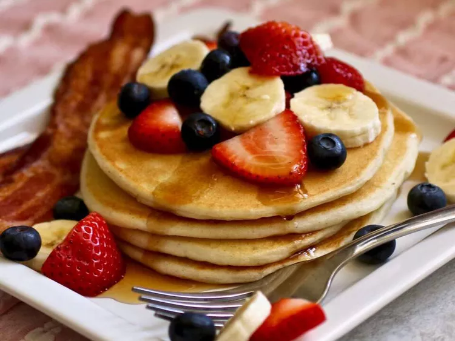

Grandma sure knows how to keep a good boy happy!
These are the best buttermilk pancakes. This recipe is handed down from my grandmother.
Ingredients:
3 cups all-purpose flour
1 tablespoon white sugar
1 teaspoon salt
1 teaspoon baking soda
3 cups buttermilk, or more as needed
½ cup vegetable oil
2 large eggs
Steps:
Preheat a griddle to 400 degrees F (200 degrees C) according to manufacturer's instructions.
Combine flour, sugar, salt, and baking soda in a mixing bowl; mix thoroughly. Add 3 cups buttermilk, vegetable oil, and eggs; mix thoroughly by hand with a spoon. Add more buttermilk to adjust consistency if needed. Batter should be slightly lumpy but not too thick; pancakes will be flat if batter is overmixed.
Working in batches, spoon batter onto the hot griddle. Cook until the bubbles that form on the top surface begin to pop, 3 to 4 minutes. Flip and cook until the other side is golden brown, about 2 minutes more.